Get outfit feedback the same way you'd ask a friend and honest opinions on what to change. I designed, researched, and built this social fashion app solo, end to end.
FigmaUsability TestingFirebaseFlutter
View Case Study
02
Student Well-being App
A student well-being app that goes beyond logging feelings. Through a short self-assessment, students identify which of three research-backed competencies — emotion regulation, resilience & adaptability, and social-emotional regulation — they're weakest in, then follow a structured path to actually build it. During UX-internship, I led UX research with 18 students and designed the experience alongside faculty and senior designers.
FigmaBehavioural Design
View Case Study
03
Wordtropolis
Redesign project: A gamified spelling platform for young learners, redesigned around how children naturally learn: through play and visible progress.
FigmaJava SwingGamification
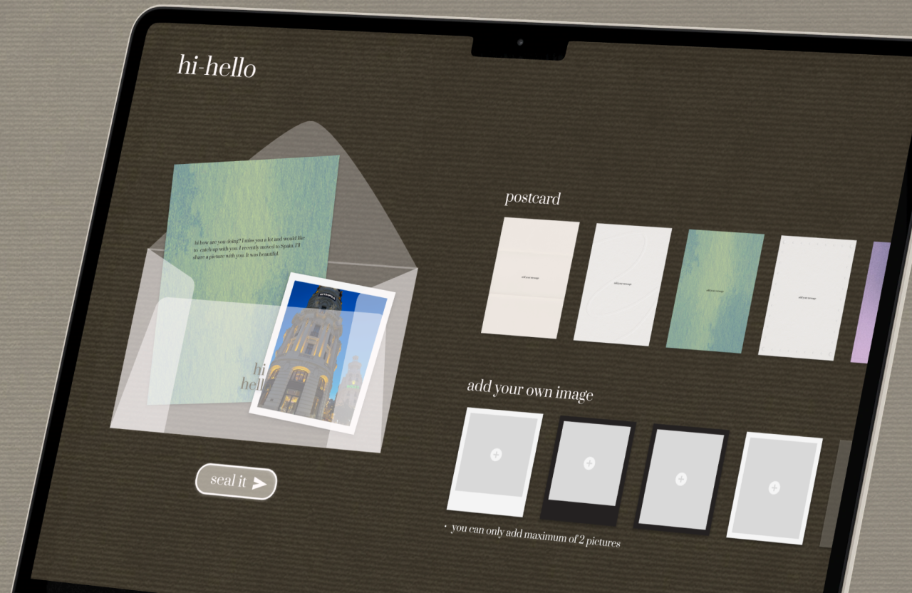
View Case Study
04
HiHello
A digital envelope experience exploring how to bring the intentionality of physical letters into digital messaging. I designed, coded, and deployed this digital letter-writing app solo.
FigmaClaude Code
About
Research-driven. Built to ship.
I studied Computer Science, but got hooked on the layer above code. Why people struggle with products, and which problems are actually worth solving. Today I move between research, product decisions, interaction design, and the code that ships it.
My habit: opening apps I use daily, noticing where I hesitate or get stuck, then asking whether that's a design problem or a product one — a confusing screen, or a feature that shouldn't exist yet. I design outward from that friction, and I'm just as willing to cut scope as I am to add polish.
Every redesign, I ask: what problem is this solving, is it the right problem to solve right now, and what trade-off am I making by shipping it this way?
Product Design + Full-Stack Development · Research & Design Complete · In Active Development
Fitoday
Fitoday is a social fashion app where you post your outfit and get real feedback from people whose taste you trust and not just likes. I introduced a three-option rating (love it / it's okay / rethink it) paired with optional written comments, so responses stay fast to give but still useful to receive.
Fashion platforms are built for sharing outfits, not improving them. People get likes, but rarely feedback they can actually learn from.
Solution
A social fashion app where every outfit post gets a fast and structured rating plus optional comments. Here, feedback is built to be quick to give and genuinely useful to receive.
Role: Solo — Product Designer, UX Researcher & Full-Stack Developer
Status: Research, PRD, and Figma design complete — auth & backend security in place, core Cloud Functions still in progress
12
survey respondents in early research
5
usability test participants
1/day
post limit — a deliberate constraint, not a default
The Spark
It didn't start with a market gap.
Scrolling through Instagram, I kept wondering why some outfits looked put together and mine didn't. What I wanted wasn't more inspiration but rather a honest feedback I could learn from.
Core Insight
People weren't short on places to post an outfit.
They were short on a place to actually get feedback on it.
A competitive review and a 12-person survey confirmed the pattern: plenty of places to post, almost nowhere built for honest, constructive feedback.
"
Pinterest used to be a kind of safe place... now it's filled with AI generated content I can never seem to get rid of.
Pinterest user review
"
Their algorithm takes this kind of content to the highest peak... full of nudity, toxicity.
Instagram user review
"
Another version of TikTok — depressing, clickbait, I wouldn't use it again.
Lemon8 user review
"
I am scared that people will judge me. I don't think my fashion sense is that good enough.
Survey participant
A sample of the competitive review research and early survey responses that shaped the product.
Platform
Strength
Where it falls short for fashion
Instagram
Large audience
Fashion content buried under unrelated content and algorithmic noise
Pinterest
Inspiration discovery
No mechanism for personal feedback on your own outfit
TikTok
Discovery, virality
Hard to track personal style progression over time
BeReal
Daily authenticity habit
Not fashion-focused at all
Comparison of existing fashion platforms — none built around structured, private feedback.
Research → Requirements
Before opening Figma, I wrote a PRD to translate the research findings directly into product requirements, so every design decision traced back to evidence.
Who It's For
Persona — Chloe Lin, Fashion Creator.
Persona — Marcus Vance, Style Seeker.
From Wireframe to Screen
I drew out some rough drafts to get a brief understanding of the user flow. I focused on the core interactions first, then refined the visual design.
Early wireframe — main home page - rating system.
Final UI — Rating & optional feedback section.
Critical Design Decisions
Three deliberate constraints carry the product.
One post per day
Limiting users to one outfit each day encourages thoughtful posts, reduces feed clutter, and creates a habit people can realistically maintain.
Three-option rating, not likes
Likes don't explain how to improve. Three simple ratings make feedback quick to give while encouraging more meaningful responses.
Show who voted, hide what they voted
Showing who voted—but not how they voted—balances honest feedback with accountability.
Validation & Iteration
I tested with five participants using think-aloud sessions to find where people hesitated or expected something different.
01
The three-option rating system tested well — all five participants understood it immediately with no explanation needed
02
Several participants wanted a way to explain why they gave a rating, not just which of the three options they picked
"but I want people to tell me WHERE to improve not just how good it looks"
03
One participant didn't want their historical scores visible to others at all — surfacing a privacy need the original scope hadn't accounted for
04
A participant who mis-tapped submit during testing wanted to correct their vote — surfacing a need for vote modification within the rating window
Where I changed my mind
I assumed a three-option rating would be enough on its own. It wasn't — people wanted to say why, not just what. Three of my original assumptions got revised after five conversations:
Added optional comments after ratings — a quick tap wasn't giving people enough room to actually help.
Added privacy controls after someone flatly said they didn't want their history visible — a need the original scope hadn't considered at all.
Allowed vote changes during the rating window after watching someone mis-tap and have no way to fix it.
V1 → V2 — what the testing above actually changed on screen.
Design → Engineering
Instead of stopping at the prototype, I'm building the product myself in Flutter and Firebase. Auth and backend security are in place; the remaining Cloud Functions are still in progress.
Reflection
"Writing the PRD before opening Figma changed how I think about design decisions.
Every screen, every constraint — the one-post-a-day limit, the three-option rating — traces back to a requirement I wrote down before I knew what it would look like. That discipline made trade-offs easier to defend, because I wasn't arguing for a design I liked, I was arguing for a requirement I'd already justified."
Solo Project · Designed, Coded & Deployed
HiHello
HiHello is a digital letter-writing app — pick a postcard style, write a note, attach up to two photos, then seal it before sending, with no edits after. I designed, coded, and deployed the whole experience solo, using it to explore how small rituals — not more features — can make a digital moment feel intentional.
FigmaResponsive Web DesignFront-End DevelopmentDeploymentAI-Assisted Workflow
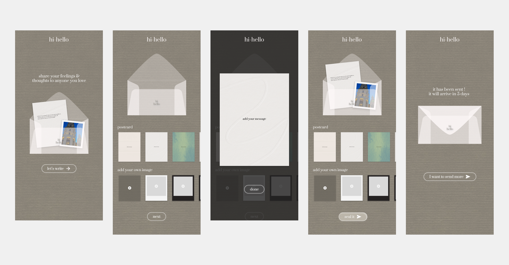
Project Snapshot
Challenge
Digital messages are instant and forgettable. They are sent in seconds, then buried in a feed. There's no space left for the anticipation that made physical letters feel meaningful.
Solution
A digital letter-writing experience that reintroduces small, deliberate rituals — choosing a card, adding photos, sealing before sending — to make a digital moment feel intentional again.
Role: Solo — Product Designer & Developer
Timeline: 5 weeks
Tools: Figma, Claude Code
Status: Designed, built, and deployed — live on the web
5-day
wait before a sealed envelope unlocks
6
postcard styles to choose from
2
max photos per letter — a deliberate cap
Design Question
How might we bring the intentionality and anticipation of physical letters into digital communication without bringing back the inconvenience of physical mail?
The Opportunity
Instant messaging optimized away every step between thinking of someone and reaching them. That's mostly good but it also erased the anticipation a physical letter still has. HiHello keeps the convenience of digital but puts a few of those steps back.
Instant messaging
Think → Type → Send → Read
Physical letter
Think → Write → Personalize → Seal → Send → Wait → Open
HiHello
Choose → Write → Personalize → Seal → Send → Wait → Open
The goal wasn't to make digital communication slower for its own sake. It was to make waiting itself part of the experience.
From Idea to Interface
Before opening Figma, I brainstormed the entertaining part of the physical letter-writing ritual.
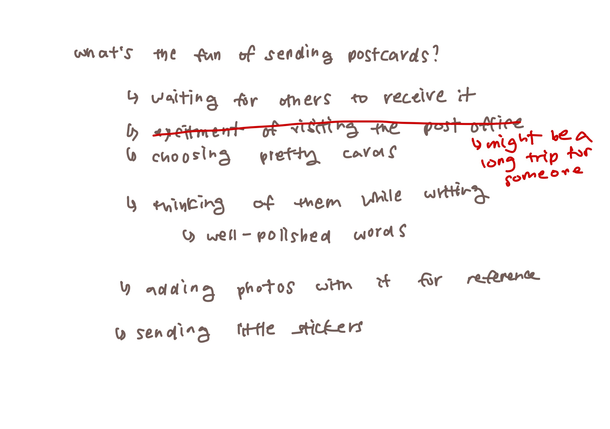
I listed every exciting part of sending a physical letter, then only left "worth keeping" and removed what may drain one's energy.
Sketching before building
Rough hand-drawn mockups let me test a few ritual mechanics quickly before deciding which ones actually earned their friction.
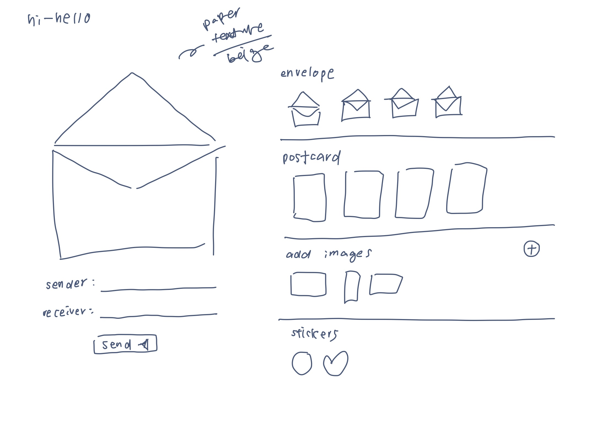
Design Principles
01 — Make sending intentional
The experience should feel like something the sender deliberately creates, not another disposable message.
02 — Make digital feel tangible
Envelopes, postcards, photos, and layered visual states borrow familiar physical cues.
03 — Make personalization meaningful
Choosing a postcard and adding photos makes the letter feel personal.
04 — Treat waiting as part of the product
Unlike most digital communication, HiHello intentionally introduces a delay instead of engineering it away.
User Flow
First Impression
One message, one action
Before writing anything, you're already asked to think of one person.
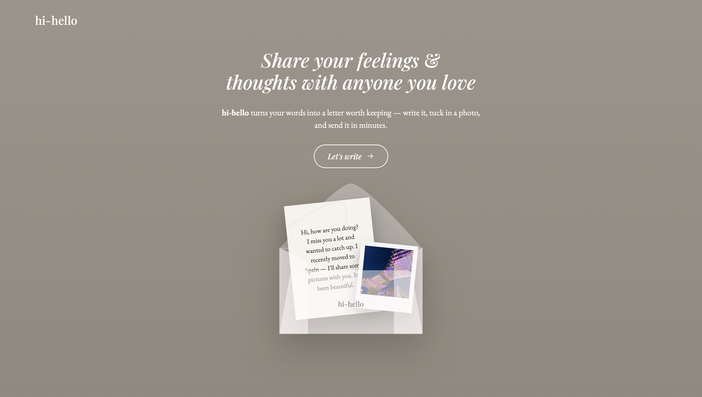
Design Decision · Choosing a Card
Picking a card is picking a mood
Six postcard styles stand in for choosing stationery before you write. This small ritual makes the letter feel chosen.
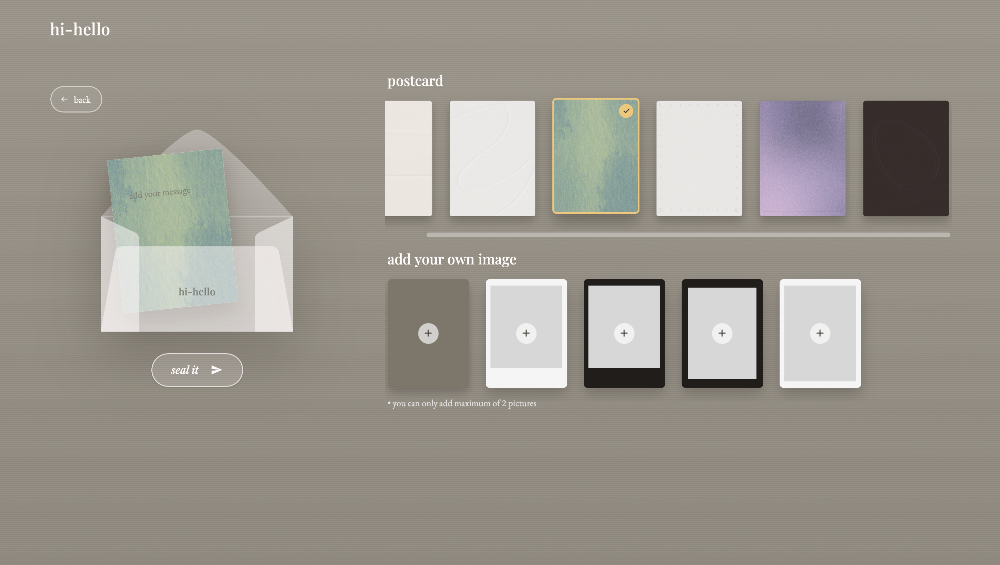
Writing
A hard limit of two photos, on purpose
Putting a hard cap of two photos, on a platform with unlimited storage. This came from a idea that physical letters can't hold twenty pictures.
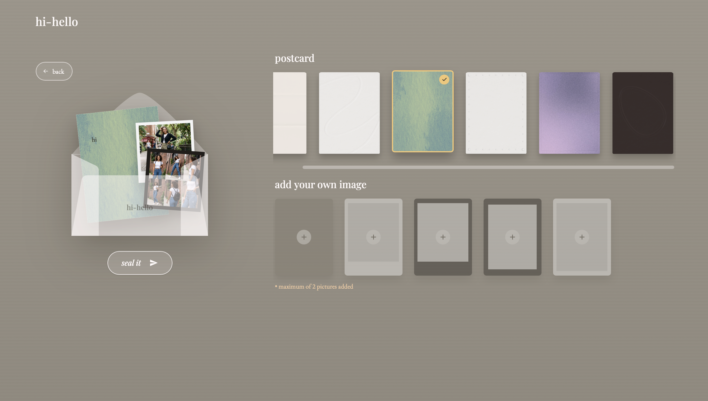
Sending
"Seal it" rather than "send it"
The final action is framed as sealing the letter and not sending a message as language brings back the finality of dropping something in a mailbox. Once sealed, it is delivered.
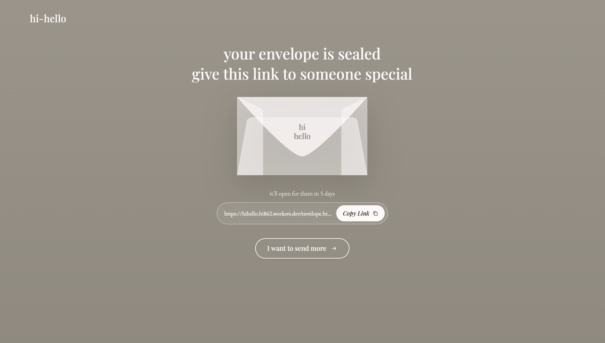
Waiting
The message becomes temporarily inaccessible
The recipient is notified something is waiting for them, but can't open it yet. Making the envelope's existence visible and not its contents is what turns the delay into anticipation instead of just a hidden message.
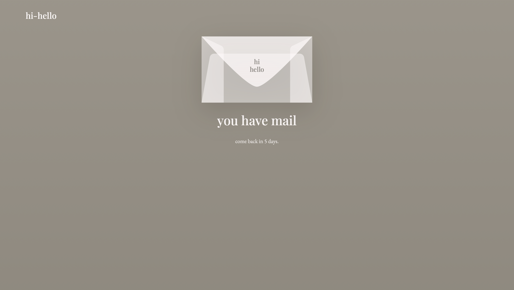
Opening
Finally ready to be read
Once the wait ends, the recipient has to actively open the envelope rather than simply receive a message. Then the user gets to save the envelope/content as a pdf file to keep it forever!
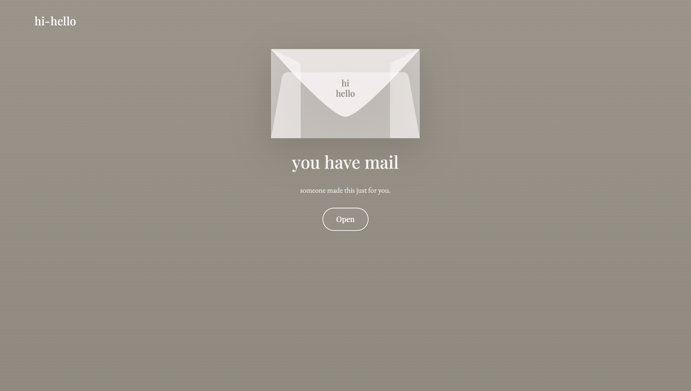
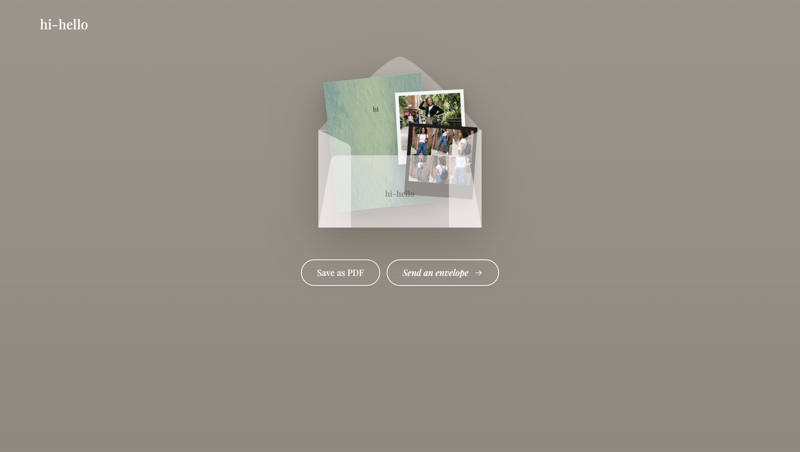
The Waiting Experience
I want to be upfront: no research was done to validate five days specifically. It's an intentional product experiment and not a finding.
01
Does the wait create anticipation, or just frustration?
02
Is five days too long? Would 24 hours feel more natural?
03
Does the recipient understand why they have to wait?
04
Does anticipation actually make the message feel more meaningful once it's opened?
What I'd validate next — a simple A/B comparison of delay lengths (24hr / 5-day / 14-day) with real senders and recipients.
From Design to Product
Designed, coded, and deployed — solo, end to end.
HiHello was designed in Figma and built as a fully responsive web app for both mobile and desktop, then deployed independently. I used AI-assisted development (Claude Code) to move faster through front-end implementation while staying hands-on with every interaction and layout decision myself.
Reflection
"This project pushed me to design friction on purpose which is quite counterintuitive as most of my work is about removing it. The five-day wait is a bet and I think that's fine: not every decision needs research behind it yet, it needs a clear hypothesis and a plan to test it. I'd want to run the delay-length comparison above next, with real senders and recipients, to see whether anticipation actually deepens how the message lands or if it just annoys people."
Behavioural Design · Research & Design Complete · Development Ongoing
Student Well-being App
During my UX-internship, I worked on a student well-being app that goes beyond logging feelings. Through a short self-assessment, students identify which of three research-backed competencies — emotion regulation, resilience & adaptability, and social-emotional regulation — they're weakest in, then follow a structured path to actually build it. I led UX research and design, working closely with education faculty and senior developers.
FigmaUsability TestingUX Research
Project Snapshot
Challenge
Most well-being apps help students log or reflect on their feelings but it stops there. None translate that reflection into targeted skill-building.
Solution
A self-assessment that identifies a student's weakest competency across three research-backed areas, then a structured path — goals, challenges, reflection — to actually build it.
Role: Lead UX Researcher & Designer & Intern
Timeline: 17 weeks, Summer Internship 2025
Team: Worked with a team including education faculty, senior developers and senior UX designers
Status: Research & design complete — backend/chatbot development ongoing, final UI confidential
18
students tested across two rounds
70%
said the reflection experience would support their daily well-being
3
design changes shipped after testing
Core Insight
Students didn't need another place to write about their feelings. They needed a path to actually get better at handling them.
Our literature review pointed to three competencies — emotion regulation, resilience & adaptability, and social-emotional regulation — as the real drivers of student well-being. Logging a feeling doesn't build any of them but rather a deliberate and guided practice does.
"
By the time I realize something's wrong, it's been going on for weeks.
F**** M****
"
I've tried mood apps but I never know what to do with the information after.
Y***** L**
"
I can see I was sad on Tuesday but I don't remember what caused it.
A*** K**
"
Rating my mood feels pointless when nothing changes after.
A***** M*****
Pre-survey responses
The gap wasn't reflection but was development.
A competitive scan confirmed that existing apps already let students log and write about their feelings. None of them identified a specific competency a student was weak in and helped them actually improve it.
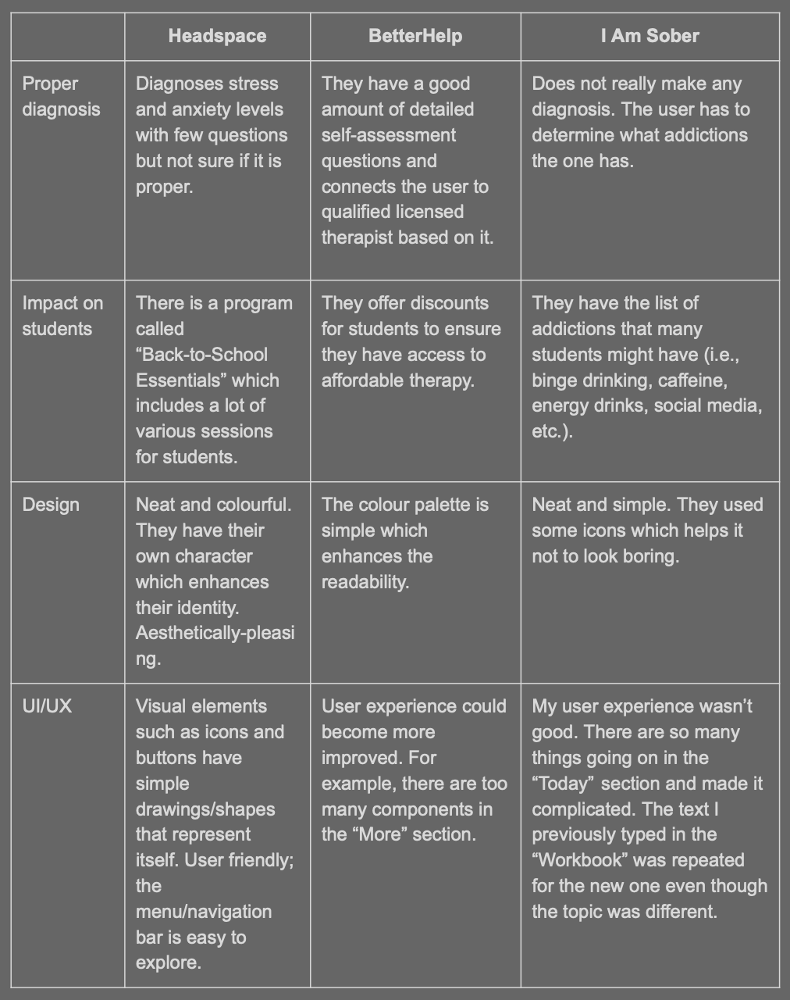
Where we changed our minds
We didn't start here. Our first instinct was sleep tracking as sleep is the obvious lever for student well-being, and it felt like a safe, well-supported place to start.
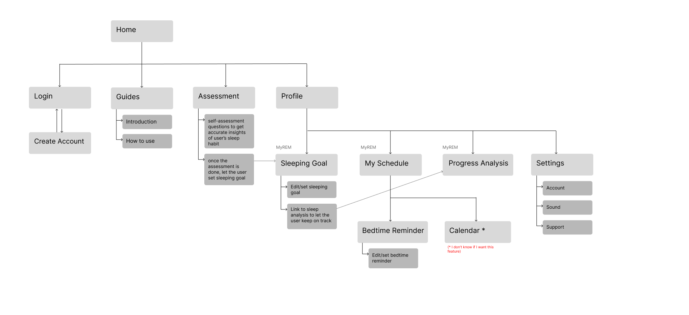
The sitemap we actually built for the sleep-tracking direction, before we abandoned it.
The literature review kept pulling us away from it: sleep only explained part of the picture. Emotion regulation, resilience, and social-emotional skills mattered just as much — and none of them were about sleep at all. Keeping sleep-tracking would have meant building the easy answer instead of the right one.
Meet the User
Persona — Jenna Andrews & Michael Lee.
Structuring the Experience
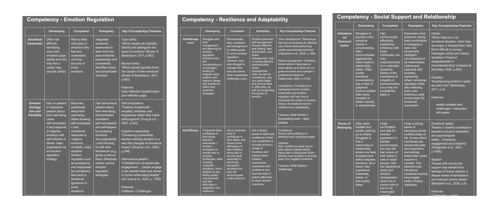
How to track & evaluate competency levels.
Setting clear goals before interface
Before any screen design, I cleared out how the competency levels would be tracked based on literature review and which features are essential to evaluate progress effectively.
Wireframe & Low-fidelity Prototype
A wireframe and low-fidelity prototype let us roughly visualize the reflection flow and catch structural issues while they were still cheap to fix (low-fidelity prototype's colour scheme and logo was later changed to a different style to create a calmer environment)
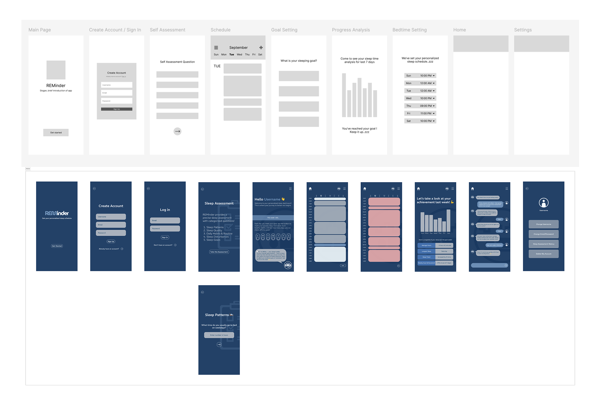
Low-fidelity prototype screens + wireframe
From Insight to System
Self-assessment first, not open-ended logging
Students start with a short self-assessment across the three competencies, which surfaces the one they're currently weakest in then guided goals, challenges, and monthly reflection track progress toward mastery. Rather than free-form mood logging, the app gives them a clear starting point and a reason to come back.
fyi - competency-based progression flow is just visualized as final ui is confidential
Why these decisions mattered
Self-assessment, not open logging
Students start by identifying their weakest competency, not by freely logging whatever they feel — giving reflection a direction from day one.
Three competencies, one focus at a time
Emotion regulation, resilience & adaptability, and social-emotional regulation — students build one at a time instead of tracking everything at once.
Reduce mental effort
The interface intentionally avoided overwhelming users with charts and analytics so they could focus on reflection instead of information overload.
Testing & Iteration
Tested with 18 students across pre-surveys, think-aloud sessions, and post-surveys to measure how reflection changed the way they thought about their emotions, not just task completion.
What we changed after the user testing
01
Redesigned onboarding after users expected a traditional mood tracker.
02
Strengthened social goal-sharing after participants described it as motivating.
03
Expanded reflection prompts after testing suggested they improved emotional clarity.
Current Status
Presented at a research-focused virtual conference. Final high-fidelity UI is confidential while development continues.
Reflection
"This project changed how I think about UX research.
Rather than asking how users interact with an interface, I became more interested in understanding why they behave the way they do in the first place.
That perspective continues to shape how I approach product design today."
Wordtropolis turns spelling practice into missions and boss battles — kids fight a boss to master a word instead of drilling flashcards. As UI lead, I introduced the mission-based progression system and built the full experience in Java Swing after prototyping in Figma.
learning-science principles driving every decision
12wk
academic timeline, team project
Figma→Java
prototyped, then fully implemented
Project Snapshot
Challenge
The original spelling tool had low engagement and unclear feedback. It was built around content delivery and not around how kids actually stay motivated.
Solution
A mission → boss battle structure where every spelling challenge doubles as a spaced-repetition session, with adaptive difficulty and multi-sensory feedback keeping kids in the loop.
Role: Main UI design + Java Swing implementation, within a team
Timeline: 12 weeks, university course project
Team: Course team project
Tools: Figma, Java Swing
The Problem
The original spelling tool was boring by design. That's a design failure.
We evaluated the original tool directly against these three failure points before touching any redesign.
The original spelling game interface
Problem 01
Low engagement — tools prioritized content delivery over motivation and reward loops
Problem 02
Static, repetitive interaction — no sense of progress, narrative, or meaningful challenge
Problem 03
Feedback was unclear or delayed — children didn't know their next action or whether the answer was right or wrong
Research → Design
Grounded in learning science, not intuition
Intrinsic motivation
Children engage more when the challenge feels meaningful.
Spaced repetition
Returning to hard words at optimal intervals improves retention.
Multi-sensory reinforcement
Visual + audio feedback accelerates learning.
The game arc structure
The mission → boss battle progression is the core information architecture. Each mission is a spaced-repetition session; the boss battle is the mastery check. The progression system was designed before any visual decisions were made.
Game arc — mission flow showing how levels lead to boss battle
Key Design Decisions
Mission-based progression
Structured learning around visible goals and meaningful milestones to sustain engagement over time.
Adaptive challenge system
Difficulty adjusted dynamically based on performance, balancing frustration and accomplishment.
Multi-sensory feedback
Visual celebration + audio cues on correct responses reinforce learning and maintain engagement for young users.
Design → Build
This wasn't just a concept. It was a fully realized interactive prototype.
The full experience was drafted in Figma and implemented in Java Swing, allowing gameplay pacing, adaptive challenge, and feedback systems to be tested beyond static mockups.
Designing through implementation
Implementing it exposed how pacing, feedback timing, and adaptive challenge directly affected engagement in practice.
Draft -> Java Swing
Final Outcome
Mission screen — spelling challenge tied to the cat character, part of the spaced-repetition mission loop
Narrative obstacle screen — gives the mission stakes beyond a plain word list
Progress-gated screen — visualizes the adaptive-challenge system blocking advancement until mastery
Boss battle — the mastery check that closes out each mission arc
Outcome
Reimagined a traditional spelling game using behavioural and child-centered UX principles
Explored how progression systems can support educational engagement and retention
Built a fully interactive prototype implementing adaptive challenge and multi-sensory feedback
Explored how gameplay structure can become the foundation of a learning experience rather than a decorative layer
Evaluated by course TAs and the professor, who noted it stood out from other teams' submissions — though it was not tested directly with children (see Reflection)
Reflection
"Working within a tight school project timeline pushed me to prioritize decisions quickly and defend them clearly. Given more time, I would have explored more advanced adaptive features and conducted user testing with children directly."